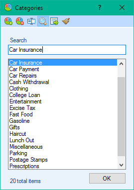
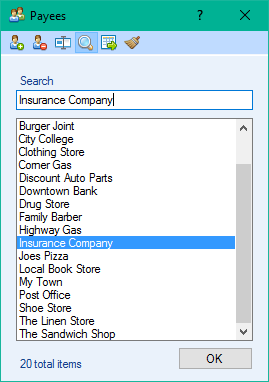

Categories & Payees


 Categories and Payees serve several purposes in Checkbook. Not only do they help organize your transactions, but they are also used to calculate montly totals in Spending Overview.
You can also search your ledger for specific transactions with theQuick Filter orAdvanced Filter tool. The more information you give to your transactions the easier they are to find! See the
list below for the options that are available for Categories & Payees. Categories are used in the example below; you will notice in the images above that both Categories & Payees work the same way.
Categories and Payees serve several purposes in Checkbook. Not only do they help organize your transactions, but they are also used to calculate montly totals in Spending Overview.
You can also search your ledger for specific transactions with theQuick Filter orAdvanced Filter tool. The more information you give to your transactions the easier they are to find! See the
list below for the options that are available for Categories & Payees. Categories are used in the example below; you will notice in the images above that both Categories & Payees work the same way.
- Create Category: Create a new unique category. Examples for categories are Haircut, Groceries, Clothing etc. Payees are businesses or people you received money from or gave money to.
- Delete Category: Allows you to delete one category at a time. If you delete a category that is in use in your ledger each transaction containing the category will be replaced with Uncategorized. Deleted payees will be replaced with Unknown.
- Rename Category: Allows you to specify a new name for your category. Each transaction in your ledger that contains the category you are renaming will also be renamed.
 Search: Toggle the search box by clicking the magnifying glass icon. Your list will be searched as you type.
Search: Toggle the search box by clicking the magnifying glass icon. Your list will be searched as you type.
- Import Categories: Allows you to load in categories from another ledger that already contains some categories that you want to use in your currently open ledger.
 Delete Unused: Allows you to sweep away unused categories from your list.
Delete Unused: Allows you to sweep away unused categories from your list.